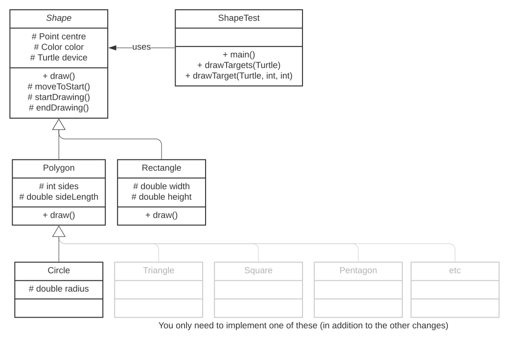
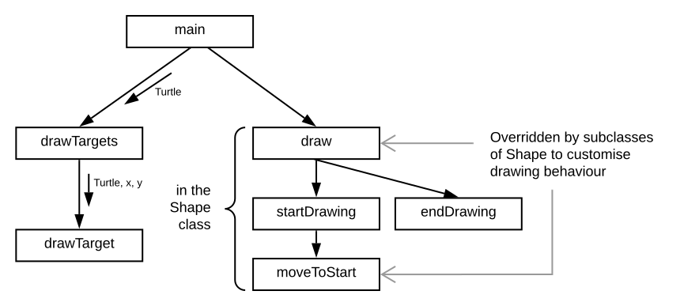

Purpose: |
Learn about inheritance (of data and methods) in an object-oriented programming language. |
Task: |
Complete the implementations of various subclasses of an abstract Shape (that knows its centre and can draw itself with a Turtle). |
Learning Outcomes: |
1, 2, 3, 4 |
Time: |
Aim to complete this task before the start of Week 10, but it may also be completed later (see note). |
Resources: |
|
Upload the following to the MyLO submission folder for this task:
A Completed submission will:
Object-oriented languages allow classes to be extended so that (1) functionality can be reused without rewriting the same code and (2) refinements (specialisations) of more basic classes can be created. The subclass inherits all of the public (and also protected) methods and instance variables of its superclass, and can use them as if they were declared in its own source file.
Consider the following three source file program, where the class B extends the class A, adds a new method (helloHello) as well as using the method defined originally in class A (hello):
A.java:
public class A {
public void hello(String name) {
System.out.print("Hello " + name);
}
}B.java:
public class B extends A {
public void helloHello(String name) {
for (int i = 0; i < 2; i++) {
hello(name);
System.out.print("! ");
}
System.out.println();
}
}Program.java:
public class Program {
public static void main(String[] args) {
B b = new B();
b.hello("Jane\n"); //prints Hello Jane
b.helloHello("John"); //prints Hello John! Hello John!
}
}In this task you will complete the implementation of a program for drawing different kinds of shape, where each kind of shape is different class that builds on the features of a top-level Shape class. The task is as much about reading the provided code as it is adding your own code. There are some advanced features in the provided code that we indicate as such and which you can safely ignore (or learn from them if you feel ready).
Download the 9.2CR Coding with Inheritance Starter Code and extract the contents. The program currently consists of a driver program ShapeTest.java (that you will add a little to), the base class defined in Shape.java (that you will not modify), a specialisation of that defined in Polygon.java and incomplete implementations of a rectangle (Rectangle.java) and a circle (Circle.java). Don’t open the last two until you are up to the relevant step, as they won’t compile yet. By the end of the task , the class relationships will look like the following:

Shape is an abstract class, meaning that no object of type Shape can be instantiated. It has properties for its centre, an (x, y) coordinate, its color and a Turtle graphics drawing device. These are all marked protected, so they are accessible inside Shape.java and any other source code that extends it. (In the class diagram + means public, # protected and - private.)
protected is visible in any source file in the same package. Since we’re not using packages to organise our source files this means the protected variables are accessible from the driver program, but we’ll be ‘good’ and will not attempt to directly access them.
draw() method is abstract and has no method body. This means any subclass of Shape must provide an implementation for this method.the first line of its constructor uses the keyword super to execute the code in Shape’s constructor:
super(x, y, color, device);draw() and overrides (replaces) the implementation of moveToStart().Triangle, Square, Pentagon, Hexagon, Heptagon, etc. are optional convenience classes that extend Polygon and which require very little code. You will implement one of these of your choosing.
But how does drawing work? The structure chart below shows another view of the same program, focusing on the methods. ShapeTest contains main and some support methods for drawing the targets. Shape, and all of its subclasses, perform their drawing according to the following pattern:

Subclasses provide (or replace) implementations of draw() and moveToStart() to suit the kind of shape they are. Polygon provides valid implementations of both of these for all regular polygons. Rectangle does not yet provide proper implementations of these. By replacing the behaviour of those two methods, a particular subclass of Shape changes its drawing behaviour.
Polygon already works, so let’s add one to the collection of shapes in ShapeTest.java. Ensure that Circle.java and Rectangle.java are not open at the moment, since they won’t compile yet. In ShapeTest.java, at the indicated location, add a statement following this pattern:
shapes.add(new Polygon(sides, side length, x, y, colour, device));where you need to choose values for sides (try a value ≥ 5), side length, x, y and colour (e.g., Color.BLUE).
Before moving on to the next part, repeat what you just did to add another Polygon with a different number of sides, centred at one of the other target locations.
In this stage of the task you will complete the implementation of the Rectangle by implementing its constructor, draw(), moveToStart() and providing a toString() method.
Complete the Rectangle constructor according to the following algorithm:
1 Call super with x, y, color, device 2 Assign this.width the value of width 3 Assign this.height the value of height
Return to ShapeTest.java and, after the polygon you added earlier, add a statement following this pattern:
shapes.add(new Rectangle(width, height, x, y, colour, device));where width and height should have different values and, as before, x and y are chosen to be one of the target locations.
You should be able to compile the program, but if you run it there’s no shape drawn on the screen, and the console output isn’t much better. Let’s fix that by implementing draw().
Drawing a rectangle involves drawing the horizontal side, turning 90 degrees, drawing the vertical side… twice:
Method: Rectangle.draw() Steps: 1 Call startDrawing 2 For i is 1 to 2 (i.e., while i <= 2) 2-1 | Call device.move with width 2-2 | Call device.turn with 90 2-3 | Call device.move with height 2-4 | Call device.turn with 90 3 Call endDrawing
But wait! We need to start drawing at the bottom-left of the shape, not its centre, so add a moveToStart method (which will replace the one inherited from Shape):
/** Moves to the first (bottom-left) vertex, relative to the centre. */
protected void moveToStart() {
//TODO Add one line of code here to relocate to the bottom-left vertex
}Because the bottom-left of a rectangle is half its width and half its height from its centre, replace the //TODO comment with code to move to (centre’s x – width/2, centre’s y – height/2).
Need that expressed more explicitly?
device.moveTo(centre.x - width/2, centre.y - height/2);Return to ShapeTest, recompile and run the program. You should now see the rectangle at the correct location. But we’re not quite done. The console output still just says the shape is a Shape (and displays its centre). Return to Rectangle.java and define a toString() method:
/** Returns a String representation of the rectangle. */
public String toString() {
//TODO Return a one-line description of the rectangle
}Follow the same pattern as in Shape and Polygon’s toString() methods and create a String based on the pattern:
ClassName (“property1=” + property1 + “, property2=” + property2 + “, centre=” + centre + “)”;
Need that expressed more explicitly?
return "Rectangle(width=" + width + ", height=" + height + ", centre=" + centre + ")";Recompile and run ShapeTest to see the more informative console output.
In this stage of the task you will complete the implementation of the Circle by implementing its constructor and providing a toString() method.
Ensure that Circle.java and ShapeTest.java are open in DrJava. A circle can be represent by a polygon with many small sides. Note near the top of Circle’s definition a constant named FINENESS: the larger this value the cleaner/finer the circle will appear (up to a limit, since the Turtle can’t draw anything smaller than one pixel). You should not need to modify this value, but you will use this value in Circle’s constructor, which you should implement as follows:
the first line should call super, passing FINENESS as the number of sides and Math.sin(Math.PI/FINENESS) * radius * 2 as the length of each side. The values of x, y, color and device should be passed unchanged.
super(FINENESS, Math.sin(Math.PI/FINENESS) * radius * 2, x, y, color, device);the second line should assign this.radius the value of the parameter radius.
Before we leave Circle, add a toString() method that follows the pattern for the other shapes and reports the value of the Circle’s radius and centre.
A relatively common feature of object-oriented programming is the creation of additional subclasses that customise the behaviour of a more general superclass but that don’t add any new functionality. For example, imagine we were using our Shape classes in a program where we needed a lot of triangles. While we could create a lot of Polygons with sides set to 3, it could be more convenient to define a new, very small subclass of Polygon that fixes the value of sides. That’s what you’ll do in this final stage.
Select a regular (convex) polygon, a shape with at least three sides and no corners that go in toward the centre. There are lots to choose from: triangles, squares, pentagons, … dodecagons, etc. Create a new class definition based on the code in Circle.java but much simpler:
Remember to name your class after the polygon shape you’ve selected.
super to initialise the Polygon (because by extending Polygon your new shape is also a Polygon) to the correct number of sides.Double check you’ve completed everything using the checklist below and upload the screenshot, ShapeTest.java, Rectanlge.java, Circle.java and the source for the final shape subclass to the submission folder for this task on MyLO.
Before you submit your work, double-check that you’ve implemented all the things you need to. The checkboxes below ‘work’, but that’s just so there’s a visual indicator for you. They’re not connected to any other part of the system.
Looks like you’re ready to submit!